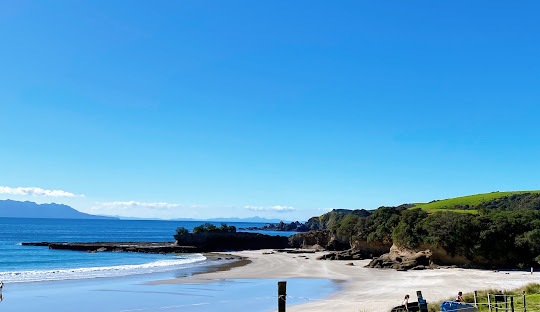

Tāwharanui is a campground and open sanctuary which is around an 80-minute drive from Auckland. It features a pearly-white sandy beaches, rolling pastures, and restored native coastal forests. It is protected by a predator-proof fence, making it a safe haven for rare wildlife like brown Kiwi, Kākā, and Takahē. The beaches are perfect for swimming, surfing, and rock pooling.
